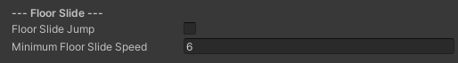
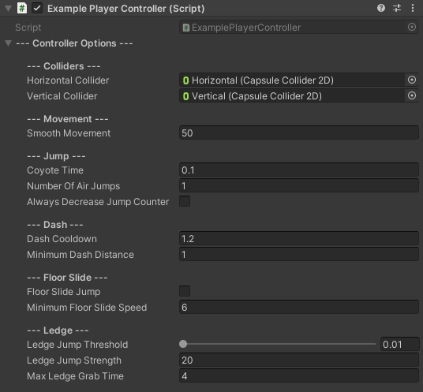

HumanoidController
SWITCH TO SCRIPTINGOverview
To utilize this script, it cannot be directly attached to a game object as it functions as an abstract class. Instead, you must create a new class that inherits from HumanoidController rather than MonoBehaviour. Once your custom script is prepared, you can then attach it to your character object.
Note that the HumanoidController requires the following components to operate correctly:
When attaching the script to your character object, the referenced scripts will automatically be included.
Additionally, the component is compatible with the following locomotion mechanics:
These are optional and can be paired with the HumanoidController for enhanced movement capabilities.
Inspector
The settings inherited from HumanoidController can be collapsed by clicking the 'Controller Options' dropdown button at the top of the component, facilitating a clear separation between the provided settings and your custom ones.
| HorizontalCollider |
Collider to use when the character is sliding.
Properly referencing a collider is essential for the sliding behaviour to function correctly and avoid triggering errors. |
| VerticalCollider |
Collider to use when the character is in an upright position.
Failing to reference a collider will result in faulty behaviour and will trigger errors. |
| SmoothMovement |
Adjusts the smoothness of character movement.
Higher values result in snappier movement, while lower values yield smoother motion. |
| CoyoteTime | Time in seconds where jump can be performed if the character leaves 'IsGrounded' state. |
| NumberOfAirJumps |
Number of jumps the character is allowed to perform while on air.
Jumping while grounded will not decrease this counter. |
| AlwaysDecreaseJumpCounter | True means that wall jumps and ledge jumps will be considered as air jumps, while false indicates that only standard air jumps will be counted. |
By adding the optional components mentioned above to your character, more options will appear within the HumanoidController component.
Adding CharacterDash:
| DashCooldown | Dash cooldown in seconds. |
| MinimumDashDistance |
Dash will be allowed only if the travel distance exceeds the specified value.
Attempting to dash in front of a wall with a distance from the character object less than this value will prevent the character from dashing. |
Adding CharacterSlide:
| FloorSlideJump | Setting this value to 'true' allows your character to jump while sliding. Otherwise 'false' if you want to prevent your character from jumping while sliding. |
| MinimumFloorSlideSpeed | When the character reaches the specified speed, the floor slide should be canceled, transitioning the character's state back to running. |
Adding CharacterLedgeGrab:
| LedgeJumpThreshold | What percentage of the 'Ledge Enter' animation must be completed before the character can jump while in the 'LedgeGrab' state? |
| LedgeJumpStrength | If only utilizing the ledge grab mechanic without the ledge climb mechanic, this value will determine your character's jump strength when they jump from the ledge. If both of the mechanics are utilized, ignore this value. |
| MaxLedgeGrabTime | For how long should the character be able to hang from a ledge before being forced to fall. |
For reference, here is how the component would appear when paired with every other optional component attached.
